Anlagenführer Laserschneide-Anlage
An der Trumpf TruLaserSie fahren die Trumpf TruLaser 5030 und bringen die Aufträge selbstständig durch.
- Selbstständige Abarbeitung der Laserschneidaufträge
- CNC-Kenntnisse
- Staplerführerschein
Wir schreiben gerade keine Stelle aus. Wer zu uns passt, findet hier trotzdem einen Platz — melden Sie sich einfach.
Wir sind rund 20 Leute. Der Geschäftsführer sitzt nicht in einer anderen Stadt, sondern im Haus — wenn etwas klemmt, wird es besprochen und nicht eskaliert.
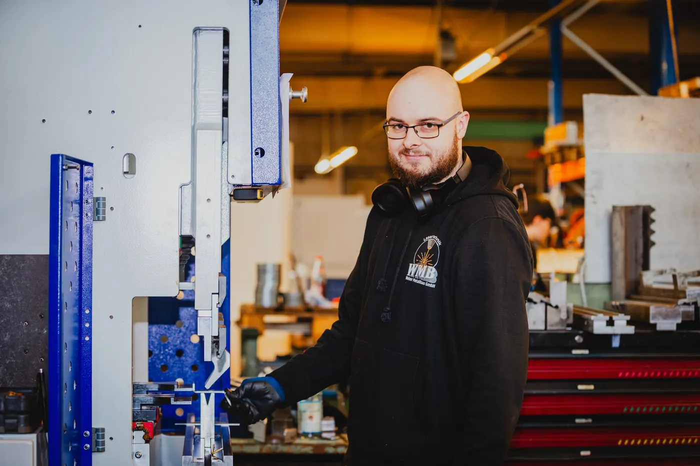
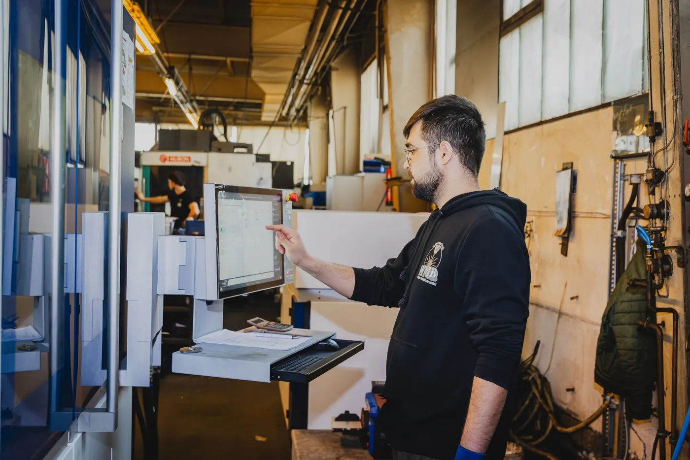
Zwanzig Leute, eine Halle. Man kennt sich hier beim Namen.
Aktuell ist keine Stelle ausgeschrieben. Wenn Ihnen einer dieser Plätze liegt, melden Sie sich trotzdem — telefonisch unter 08772 803707 oder per Mail.
Sie fahren die Trumpf TruLaser 5030 und bringen die Aufträge selbstständig durch.
Sie bedienen die Amada, prüfen die Fertigteile und geben sie in den nächsten Schritt.
Sie richten die TruBend ein und kanten nach Zeichnung — vom Einzelteil bis zur Serie.
Sie nehmen Ware an, prüfen sie und machen die Teile versandfertig.
Sie arbeiten der Fertigung zu: schleifen, bohren, fasen — und lernen die Maschinen kennen.
Schicken Sie uns trotzdem Ihre Unterlagen. Wer zu uns passt, findet hier einen Platz — auch ohne ausgeschriebene Stelle.
Bewerbung schickenEingearbeitet werden Sie von jemandem, der die Maschine seit Jahren fährt.
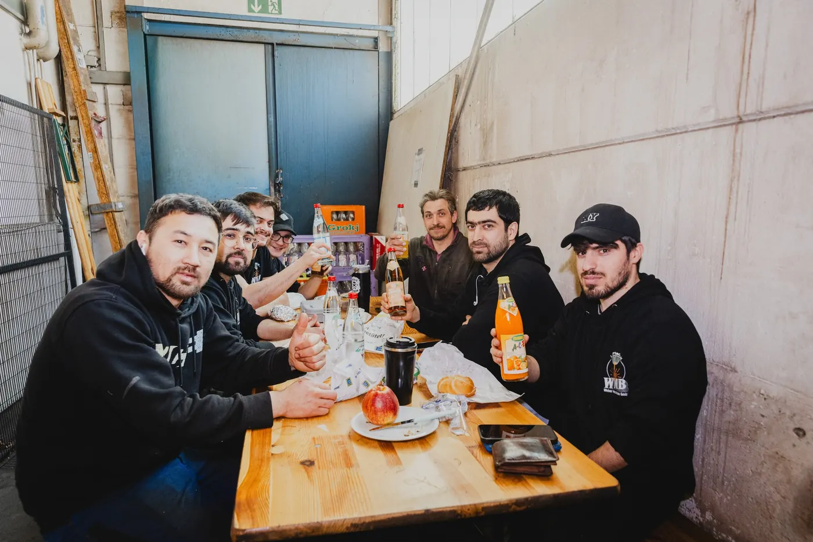
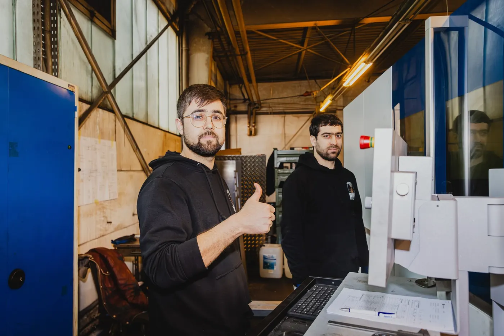
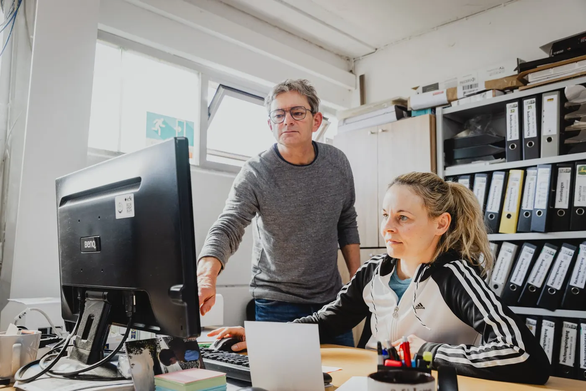
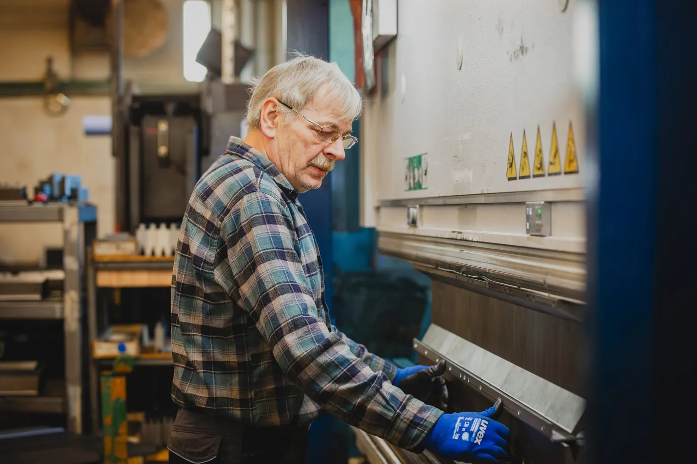
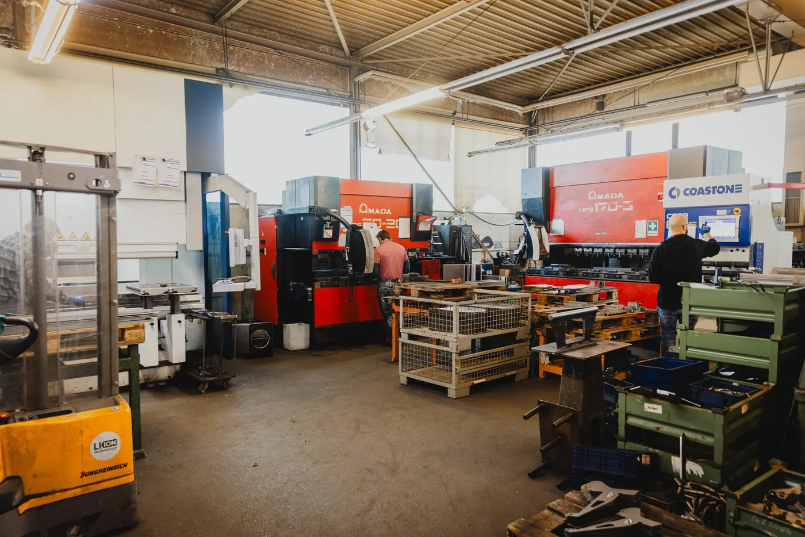
Laser, Abkantpresse, Lager und Büro liegen unter einem Dach. Wer eine Frage hat, geht ein paar Meter.
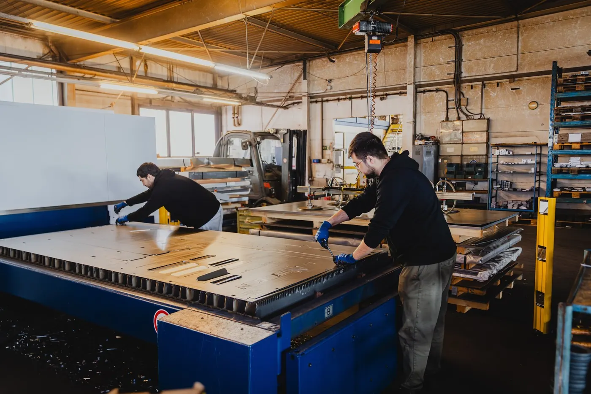
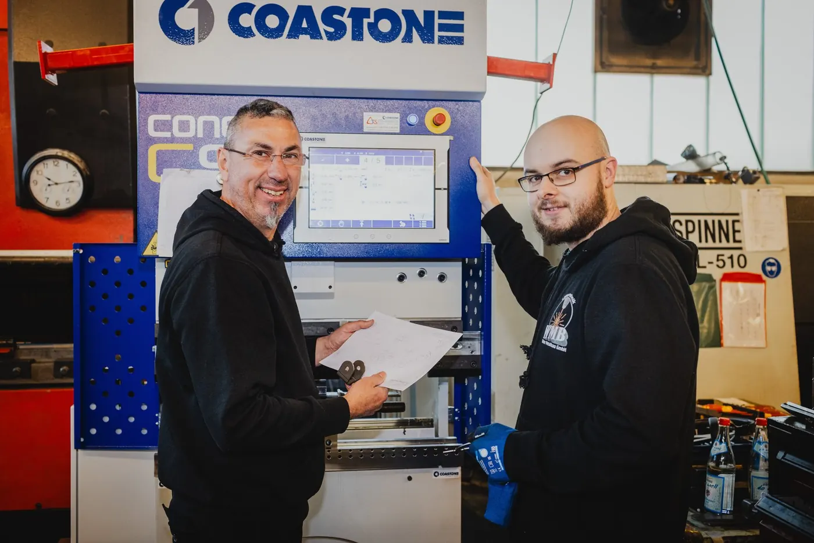
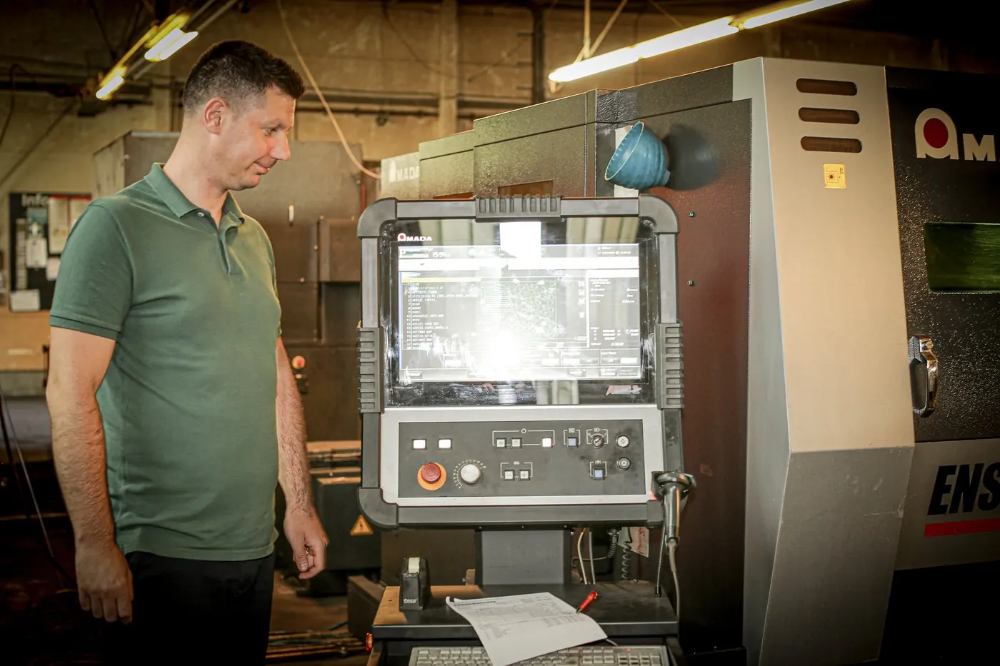
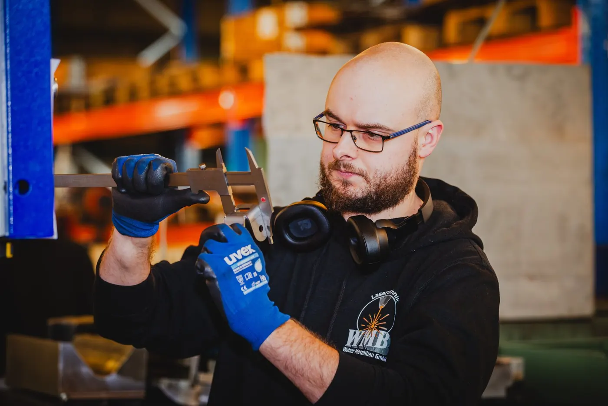
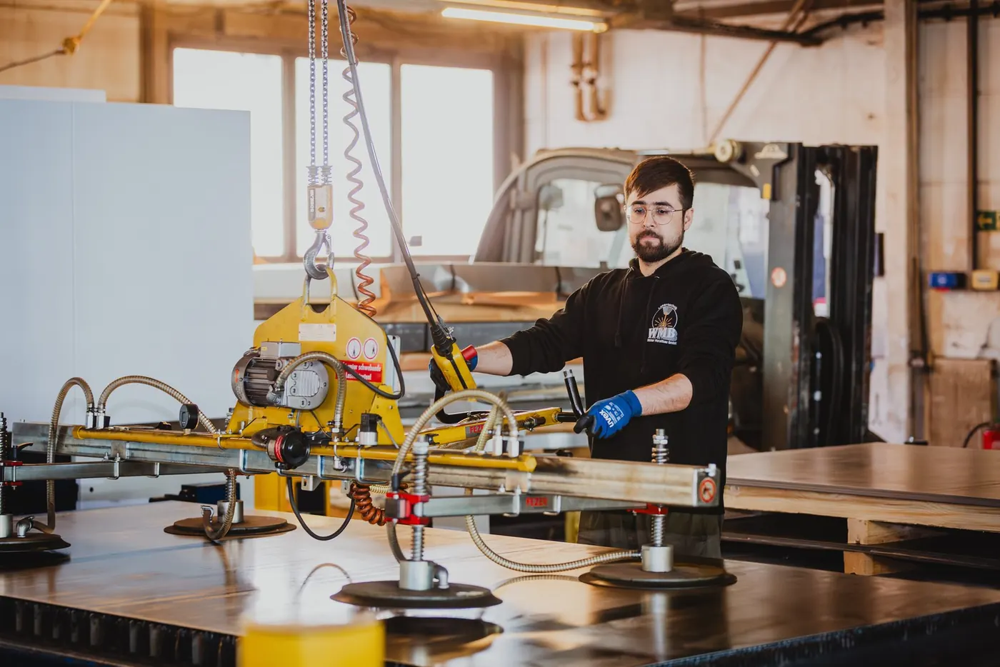
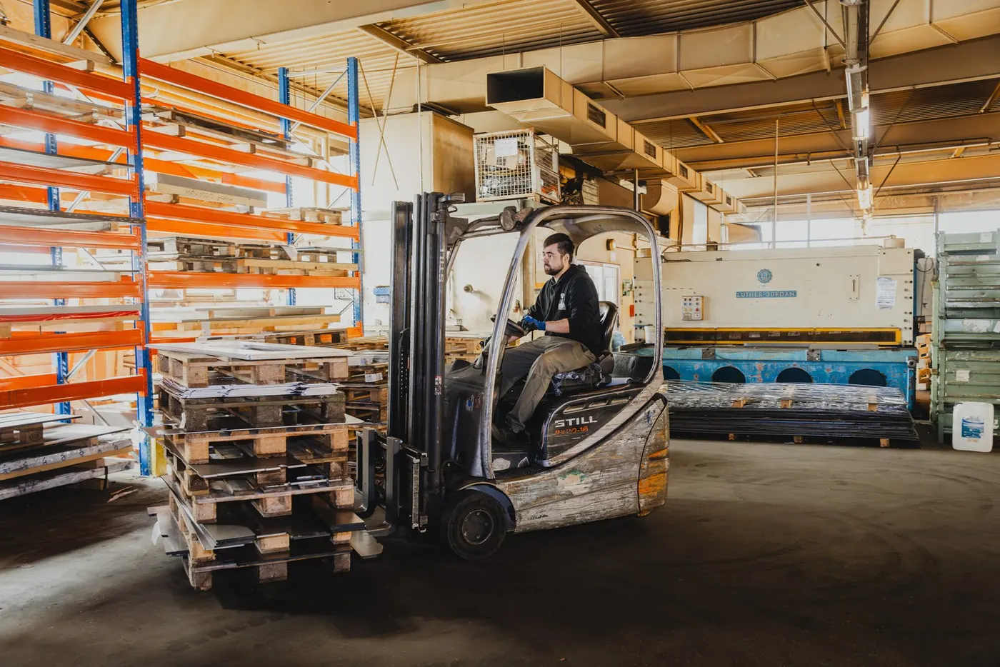
Was Bewerber uns vor dem ersten Gespräch fragen — und was wir darauf antworten.
Ihre Frage steht nicht dabei?
Anrufen: 08772 803707Aktuell ist keine Stelle ausgeschrieben. Wir sehen uns eine gute Bewerbung trotzdem an — wenn jemand passt, findet sich ein Platz.
Für die Maschinenplätze ist eine Ausbildung oder Erfahrung im Metallbereich wünschenswert. Als Produktionshelfer können Sie auch quereinsteigen.
An den Laseranlagen gibt es Schichtbetrieb. In der Regel arbeiten wir von 06:00 bis 16:00 Uhr, freitags bis 11:00 Uhr.
Eine E-Mail mit Ihren Unterlagen an Herrn Heinrich oder Herrn Weber genügt. Ein Anruf unter 08772 803707 geht genauso — auch ohne ausgeschriebene Stelle.
Rund 20 Mitarbeiter in einer Halle in Mallersdorf-Pfaffenberg. Man kennt sich hier beim Namen.
Ein kurzer Lebenslauf reicht, Zeugnisse können Sie nachreichen. Auch ohne ausgeschriebene Stelle.
Oder direkt anrufen: 08772 803707